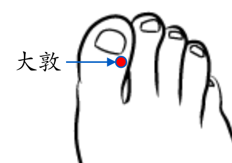

【穴位名稱】: 大敦 (LR1)

【治療症狀】: 出血 高血壓 小兒疳積 腸梗阻、腸套疊 尿失禁 小便不利 頻尿 夜尿 陽萎 陰囊炎 睪丸炎 前列腺炎 尿路感染 月經過多 閉經 乳炎、乳癱 失眠 多夢 帶狀皰疹 齒齦出血 耳源性眩暈(美尼爾氏癥) 眩暈
【取穴位置】: 足大趾末節外側，距趾甲角1分處。《靈樞·本輸》：「足大指之端及三毛之中也」；《針灸甲乙經》作「去爪甲如韭葉及三毛中」；《針經摘英集》：「在足大指外側端」；即足大趾趾甲廓外側角後旁1分凹陷處。《針灸集成》：「足大指爪甲根後四分，節前」則定於足大趾趾背，當趾甲根與趾關節之間，接近叢毛 (三毛)處。如作灸治，可從此說。
【針刺方法】: 淺刺0.2～0.3吋或點刺出血。常用艾條溫灸5～10分鐘或隔餅灸3～5壯。《類經圖翼》：「孕婦產前產後皆不宜灸。」